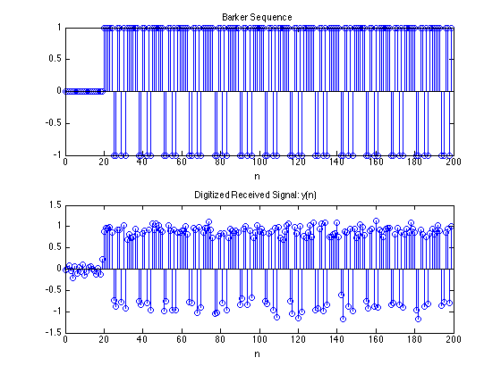
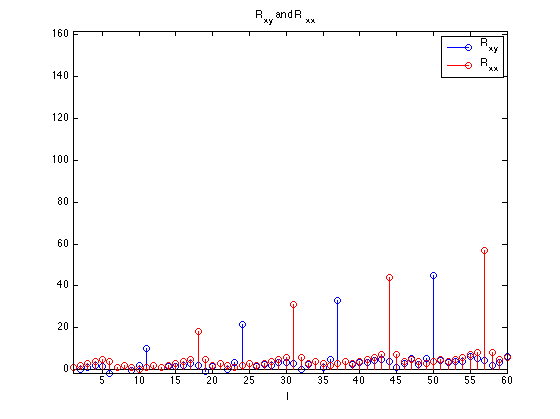
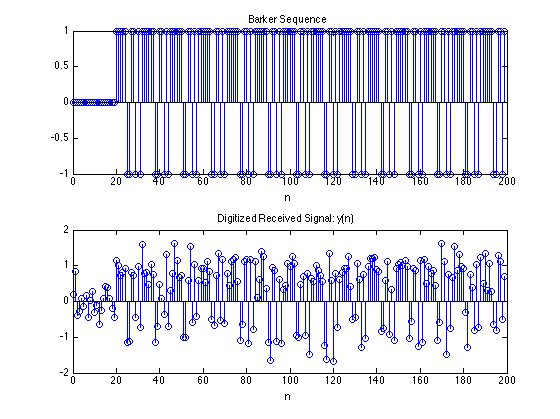
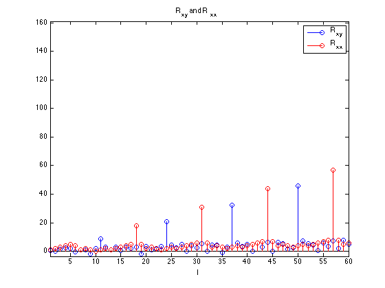
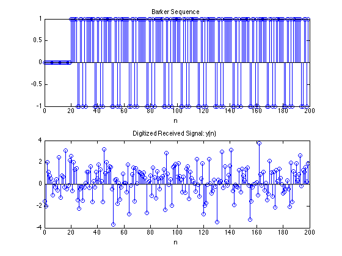
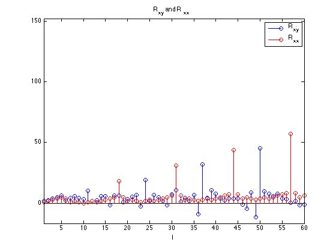
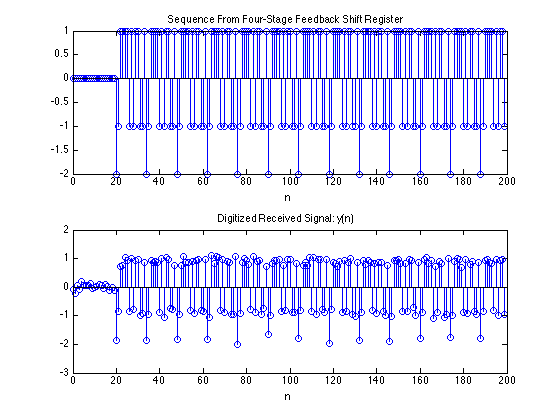
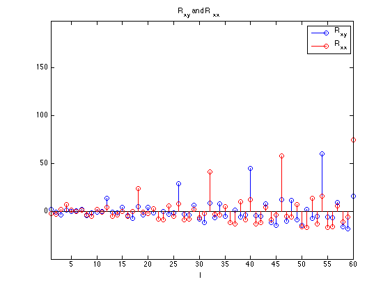
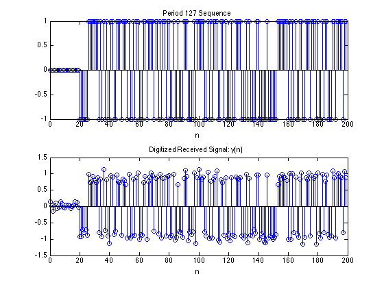
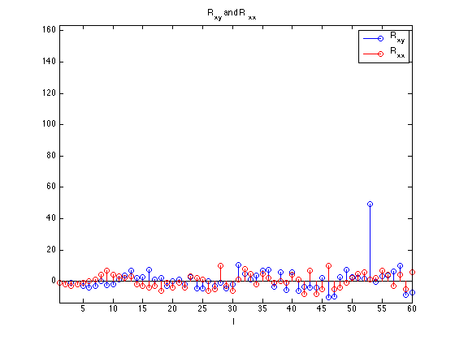

Contents
Vary Parameters in Problem 2.65
x_barker = [1 1 1 1 1 -1 -1 1 1 -1 1 -1 1];
x_4FR = [-1-1 -1 1 1 1 1 -1 1 -1 1 1 -1 -1 1];
Part B & C
HW1_2_65(0.01, x_barker, 1, 'Barker Sequence');
 
Part D (sigma2 = 0.1)
HW1_2_65(0.1, x_barker, 3, 'Barker Sequence');
 
Part D (sigma2 = 1)
HW1_2_65(1, x_barker, 5, 'Barker Sequence');
 
Part E
HW1_2_65(0.01, x_4FR, 7, 'Sequence From Four-Stage Feedback Shift Register');
seq = [1 0 0 0 0 0 0];
output = [];
for i = 1:2^7-1
feedback = xor(seq(1), seq(end));
output = [output seq(end)];
seq = [feedback seq(1:end-1)];
end
output = 2*output-1;
HW1_2_65(0.01, output, 9, 'Period 127 Sequence');
   